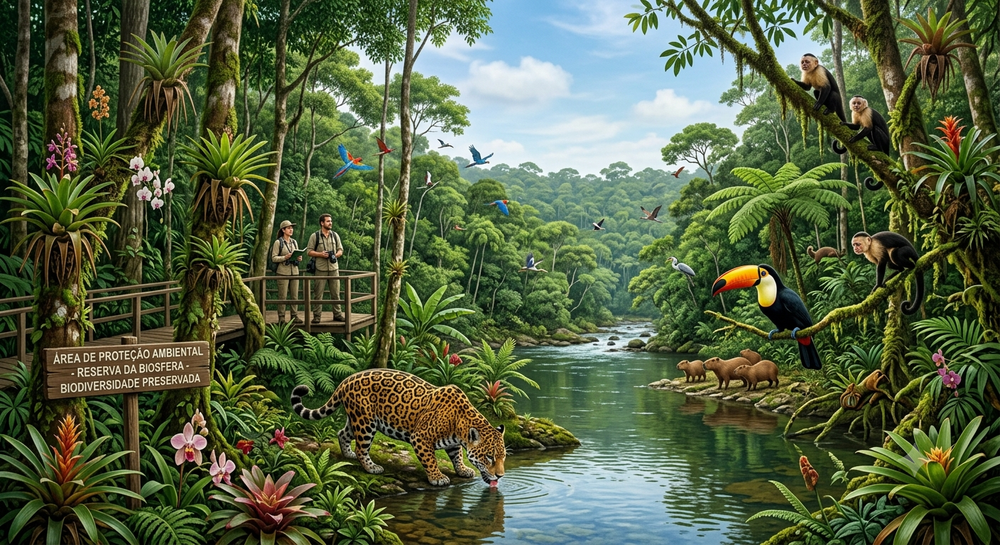
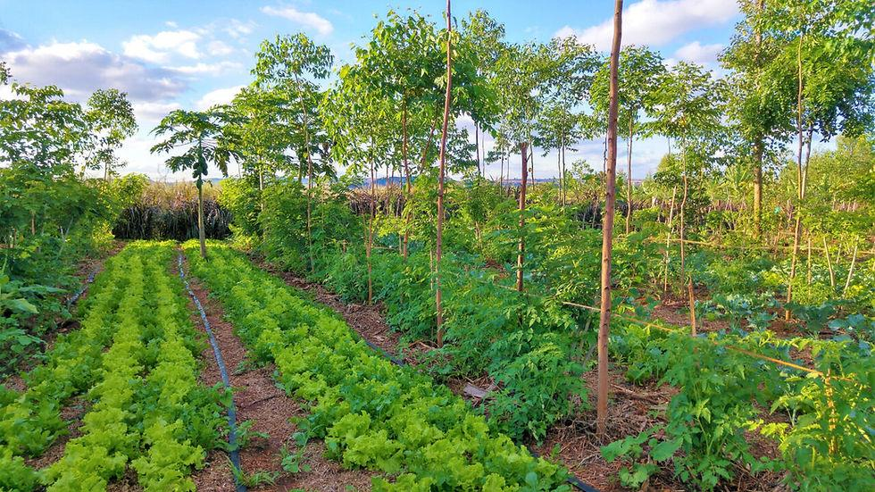
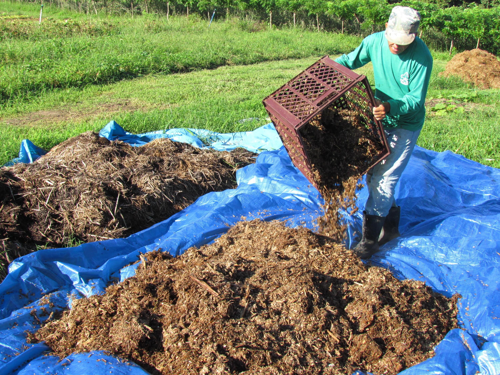
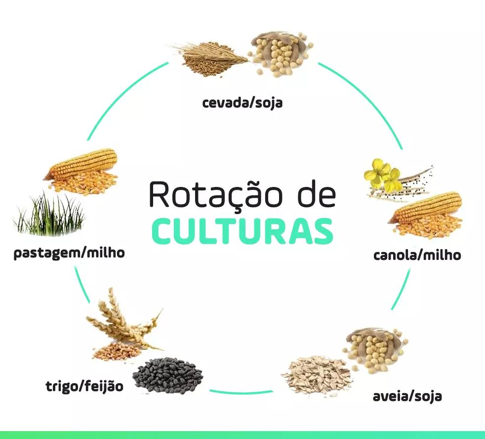

Preservação da Biodiversidade
Manter a fauna e flora nativas ao redor das lavouras ajuda no controle biológico de pragas, melhora a polinização e previne a erosão do solo. Áreas de Reserva Legal e APP são fundamentais.
O agro sustentável busca suprir as necessidades alimentares e industriais da sociedade atual sem comprometer a capacidade das futuras gerações de atenderem às suas próprias necessidades.
Ele combina conhecimento científico com práticas tradicionais para otimizar o uso da água, preservar a fertilidade do solo, reduzir a emissão de gases de efeito estufa e promover a justiça social no meio rural.

Cultivo planejado e focado na conservação dos recursos naturais.
Manter a fauna e flora nativas ao redor das lavouras ajuda no controle biológico de pragas, melhora a polinização e previne a erosão do solo. Áreas de Reserva Legal e APP são fundamentais.

Com o uso de sistemas modernos de irrigação (como o gotejamento) e o monitoramento da umidade do solo, evita-se o desperdício dos recursos hídricos e garante-se o desenvolvimento saudável do cultivo.

A adoção de painéis solares e turbinas eólicas em propriedades rurais reduz os custos operacionais e diminui a pegada de carbono da produção agrícola, promovendo autossuficiência energética.

A utilização de resíduos orgânicos, como o esterco de animais para compostagem, enriquece a microbiota do solo, reduz a dependência de fertilizantes químicos sintéticos e fecha o ciclo de nutrientes.

A transição para modelos sustentáveis garante o acesso a alimentos nutritivos, livres de contaminação pesada por defensivos químicos, promovendo a saúde do consumidor final e valorizando o produtor rural.
Veja o quanto você sabe sobre o agronegócio sustentável!
Você acertou 0 de 0 perguntas.